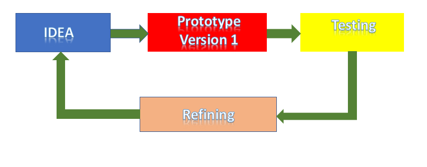
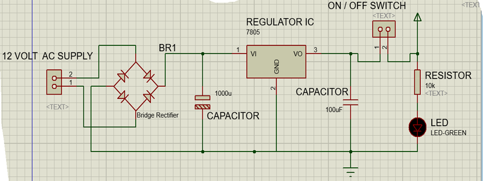
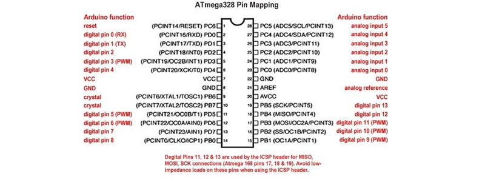

In this we are discussing about the tools and process behind the Protyotyping using Arduino.All begins with idea or problem or a thing, that which you like to build.You should have prier Knowledge about the problem area and some informations are gained through assumption, that help you to start.
But at the very beginning , you dont have the detail knowledge regarding what ever you trying to build.So you go ahead and use what you know to build the prototype version 1.This prototype may barerly work at all while testing you got a bunch of Informations that will use to adjust the orginal assumptions called refinements.Duration of iteration increases give more and more informations and resulting more and more refinements.Some point your prototype will satisfy your aim or solution, but its version may be from 1 to 100.
You use bare bone electronic components for prototyping.How ever usining Arduino which will help you to do prototyping much faster because it is a general purpose and Tested component.While using Arduino prototyping you need to carry very few tools.
Ardunio is a open hardware and commonly used development board for prototyping, we are only used arduino development board for buring code to ic after that we use our own circuit to check the working. for developing your own circuit board you need these things.
Ciruit Diagram for PCB desiging
Atmega328p Used Basic Circuit Diagram
Power Supply Circuit Diagram
Atmega 328p Pinout Digram
Note:While desiging your own circuit board for projects, you must consider the pin diagram of Atmega328p ic used other wise it connections may be into wrong pins